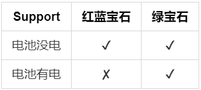
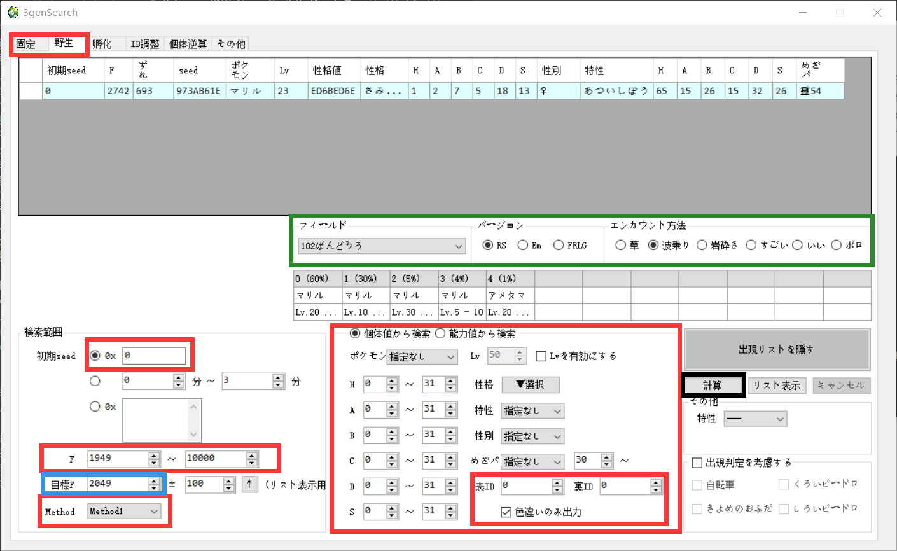
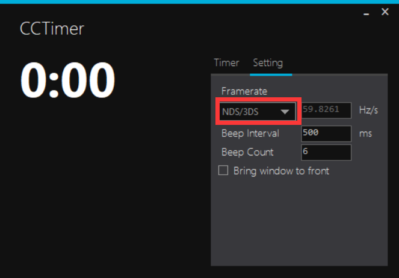
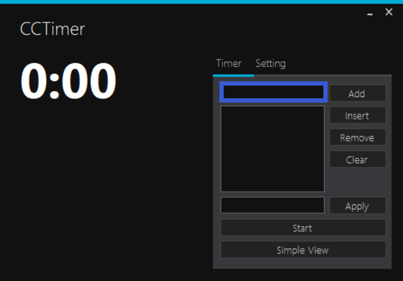
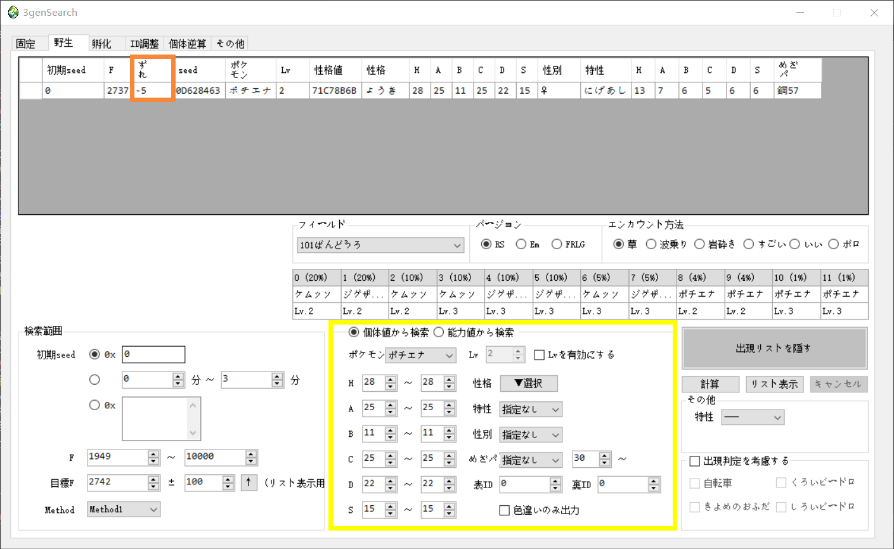

这是宝可梦绿宝石及没电红蓝宝石的实机乱数教程.
不包含 ID 与 Egg 的乱数教程.
如有纰漏，请与我联系，万分感谢！
封面 [ID:57789285].
注意，本教程仅支持：

如果你在找有电的红蓝宝石实机乱数教程，请点击这里.
如果你在找火红叶绿的实机乱数，请点击这里.
实机基本很难实现，难度很高.
暂时还没写，写完补上.
准备工作
如果你想要乱数闪光宝可梦，你需要知道你的SID.
如果你想要乱数的是已经创建好的存档，这可能会需要你导出存档并使用 PKHex 等软件查看你的存档（不涉及修改与导入），请根据自身接受程度使用.
由于我没有怎么研究过乱数ID，所以如果你想要乱数ID，请参考：Smogon ID 乱数教程.
之后如果自己研究了一遍就会上传Blog.
不会导出存档？看看这篇博客：如何备份你的存档.
硬件准备
- 能够游玩第三世代宝可梦卡带的机器（GBA系列、初代NDS 或 NDS lite，不推荐使用 NGC）.
- 电脑.
- （若使用初代NDS 或 NDS lite可选）NDS烧录卡与读卡器.
使用 NDS烧录卡提取存档进行查看可以大幅节省部分步骤的时间，强烈推荐.请根据自身接受程度使用.
如果不准备使用烧录卡，请准备足够的神奇糖果.
下载乱数所需工具：
- 计时器CCTimer
因为没有找到该软件的发布页，所以上传至仓库可直接点击下载，如果你知道它的发布页，请与我联系. - 乱数工具3genSearch
国内需要科学上网，因原作者禁止二次发布所以这里不提供直接下载，可以通过各搜索引擎找到别人的分享. - 乱数工具RNGReporter
如果因为国内 GitHub 下载速度原因不好下载，可以点击这里进行下载.
两个乱数工具选择任意一个都可以，本教程使用的是 3genSearch. RNGReporter的使用与之类似，还请读者自行探索.
了解乱数机制
我会尽量讲的简洁易懂一些，了解乱数机制可以为你理解每一步所做的原因，同时掌握各种乱数方法也会更迅速牢固.
随机数
真正意义上的随机数（或者随机事件）在某次产生过程中是按照实验过程中表现的分布概率随机产生的，其结果是不可预测的，是不可见的。而计算机中的随机函数是按照一定算法模拟产生的，其结果是确定的，是可见的。我们可以这样认为这个可预见的结果其出现的概率是100%。所以用计算机随机函数所产生的“随机数”并不随机，是伪随机数。
游戏机制与乱数目标
由于宝可梦绿宝石与没有电的红蓝宝石（以下简称 E 与 RS ）的初始seed相同（E : 0x 0，RS : 0x 5A0），而当进入游戏后，会以每秒约60帧的速度过帧（根据运行机器不同会有极小差别）.当游戏判断需要生成一只宝可梦的时候便会使用当前帧的数据来生成，我称之为 生成帧 . 3genSearch 与 RNGReporter 都可以用来获取一个seed下产生的帧的信息.
我们的目标就是在某一seed下准确击中想要的帧数，即控制 生成帧.
确定乱数目标
如果选择了野外相遇的宝可梦，请在队伍中准备一只习得了甜甜香气的宝可梦.
确定乱数目标后，选择相应的 Method. 如果是乱数蛋，请参阅这里.
Method 1
- 御三家（RS、E 一周目与 E 二周目）
- 定点宝可梦
- 釜炎镇 NPC 赠送的小果然的蛋
Method 2
- 草丛/海草/深沙/洞穴/水上/可以遇到宝可梦的建筑中通过移动/转向/甜甜香气遭遇的宝可梦（除了游走宝可梦）
- 钓鱼钓上来的宝可梦
- 通过碎岩遇到的宝可梦
测试时发现 RS 甜甜香气的宝可梦应该归属于 Method 1
测试时发现 丑丑鱼 应该归属于 Method 4
如果是 Method 1，点击下面的谜拟Q来查看保存游戏的位置与生成帧的所在时机（ E 与 RS 有些会有区别）：

-- 御三家：在博士的包前保存，在问你“Do you choose this POKéMON?”时等待生成帧
-- 飘浮泡泡：在反派干部前保存，在研究员说“It might be an odd way of thanking you, but take this POKéMON.”时等待生成帧
-- 游走水都：击败冠军后在出自己的房间门前存档，在让你选择红蓝时等待生成帧
-- 复活化石：在研究员前保存，在他说“The fossil was an ancient POKéMON. [LILEEP/ANORITH], it was!”时等待生成帧
-- 小果然的蛋：在 NPC 前存档，在她说“Good! I hope you'll walk plenty with this here EGG!”时等待生成帧
-- 变隐龙：在隐形的变隐龙前存档，在提示“The startled POKéMON attacked!”时等待生成帧
-- 大吾的铁哑铃：在精灵球前存档，在选择是否拿走时等待生成帧
-- 胡说树：在其面前存档，在提示“The weird tree attacked!”时等待生成帧
-- 盖欧卡与固拉多：在距离剧情触发前一步存档，在进入战斗前最后一段时等待生成帧
-- 凤王：Save on the first space of the peak of the cliff. Last input is pressing up on the directional pad to place yourself on the second space of the cliff.
-- 梦幻：Save in the area it appears in. Last input is a press of the A button to "tag" it.
-- 其他：在宝可梦/触发物前保存，在进入战斗前最后一段时等待生成帧
凤王和梦幻的不知道怎么表达比较好，看英文感受一下.
如果是 Method 2，在进入战斗前最后一次点击作为生成帧.
实际生成帧可能会更往后，如甜甜香气，但这段时间是固定的，可以通过多次尝试来更新.
开始乱数
搜索目标宝可梦
打开乱数工具，选择/填入图中红框中内容：

- 根据乱数目标选择固定或野生.
- 如果选择了野生，可以修改绿框中的地点、版本信息.
- 输入初期 seed，E 为 0，RS 为 5A0.
- F为搜索帧数的范围，建议800~100000，因为 seed 固定了所以可能很靠后才有你想要的帧.（1秒约60帧，请自行推测是否有耐心）（请根据实际情况调整，如甜甜香气动画较长，所以起始帧会高一些）.
- Method 选择之前确定的 Method.
- 检索区域根据自己的需要填写，若勾选 只显示异色 ，需要在勾选框上方填入表里ID.
- 点击黑框计算，得到结果.
没有想要的宝可梦怎么办？
不建议帧数再加了，10w帧约27.8分钟了，可以试着降低一下要求.
闪帧太靠后了怎么办？
换个存档叭. 太非了这个档.
在结果中选择一个满意的结果作为目标帧，将其 F 栏（即为你的目标帧）填入蓝框中（蓝框后面的内容不需要管）.
校准误差
如果你的目标宝可梦不是野外宝可梦（如定点宝可梦）且准备使用烧录卡协助乱数，那么要在步骤1结束后，使用GBA_Backup软件将存档提取出来
GBA_Backup软件可在这里找到.
- 在游戏中你应该存档的位置存档（如果你准备在洞穴或是能出现宝可梦的建筑中使用甜甜香气，请往深处走一些距离，否则甜甜香气可能会失效），存档完成后关机.
- 打开计时器 CCTimer，选择 Setting，点击红框内容，根据游戏平台选择对应选项.
 - 回到 Timer，在蓝框内填入你刚刚的 目标帧 并点击 Add .
 - 点击 Start 按钮的同时开始游戏(gba系列和设置过的nds是直接开机，未设置过的nds系列是在主页面点击GBA游戏图标).
- 在游戏中快速到达目标帧的确定位置（如：在选择宝可梦使用甜甜香气的界面）.
- 在 CCTimer 上的倒计时归零的瞬间按下机器的 A 键，然后等待进入战斗界面.
- 捕捉这只宝可梦.
- 如果你不准备使用烧录卡：将宝可梦的性格、等级、能力值等输入个体值计算软件得到其个体，如果无法得到唯一的个体，使用足够多的神奇糖果后重试. 这之后，关闭游戏. 如果你的目标宝可梦不是野外宝可梦（如定点宝可梦），记住不要保存
- 如果你准备使用烧录卡：保存并关闭游戏，使用GBA_Backup软件提取出存档，使用读卡器连接到电脑后使用 PKHex 软件打开存档，查看刚捕捉的宝可梦的数据.
- 回到乱数工具，在黄框中填入刚捕捉到的宝可梦数据（如果不是闪光记得不要勾选 只显示异色 ），点击 计算. 记下橙色框中的数字（如有多个，选择离目标帧最近的）.
 - 回到 CCTimer，计算目标帧减去刚刚橙色框中的数字的值，点击 Clear 按钮清除后输入该值并点击 Add .
例如 CCTimer 中的值（目标帧）是2156，击中帧是2177，2156 - 2177 = -21（橙色框中数字为 21），那么将 CCTimer 中的值更新为 2156 - 21 = 2135.
误差校准完成.
乱数
如果你的目标宝可梦不是野外宝可梦（如定点宝可梦）且使用烧录卡协助乱数，那么先使用GBA_Backup软件将备份存档导入
和校准误差的4、5、6步一致：
- 点击 Start 按钮的同时开始游戏.
- 在游戏中快速到达目标帧的确定位置.
- 在 CCTimer 上的倒计时归零的瞬间按下机器的 A 键，然后等待进入战斗界面.
- 如果得到的不是目标帧，可以选择再次进行误差校准或者再多尝试几次.
因为手工操作多少会有些误差，建议多尝试几次，若十几二十次失败再考虑重新校准误差.
- 乱数成功，得到目标！